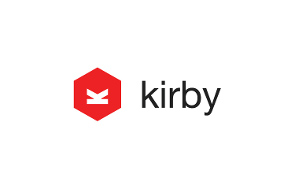

Was ich für Sie tun kann:
- eine neue Website erstellen auf Basis von HTML/CSS/JS oder eines CMS (Wordpress, Kirby)
- ihre vorhandene Website/CMS-Installation betreuen und verbessern
- ihnen sagen, wer-wann-was-wie auf ihrer Website tut --> Webanalytics
- ihnen helfen, eine Online-Marketing-Strategie für ihre Unternehmen zu entwickeln
Was ich leider nicht für Sie tun kann:
- Webdesign
Ich bin kein Designer! Für meine Frontends verwende ich ein minimimalistisches Design auf Basis von HTML5, CSS3 and JavaScript.
Das Frontend - Struktur, Layout und Funktionalität
Das Frontend verwendt die Techniken HTML (zur Strukturierung der Seite), CSS (für das Layout zuständig) und Javascript (lässt die Seite mit dem Benutzer interagieren). Es ist das, was Sie auf dem Bildschirm sehen, nämlich: ihre Website. Mein Ansatz ist - wie sie auf diesen Seiten merken werden - sehr minimalistisch. Ich erstelle in der Regel kein ausladendes Webdesign.
Wenn Sie planen, eine neue Internetpräsenz einzusetzen, kann ich diese für Sie programmieren. Nennen Sie mir gerne ihre Wünsche und wir erstellen zusammen ihren neuen Webauftritt.
Oder, Sie möchten gerne selbst in Zukunft ihre Inhalte verwalten. Dann nutzen Sie doch
Kirby ist ein dateibasiertes Content-Management-System, mit dem Sie ihre Inhalte selbst verwalten können.
Ohne jegliche Programmierkenntnisse ist die Bedienung kinderleicht. Sie laden Bilder hoch, erstellen Texte und halten ihre Website "fresh"...und zwar wann Sie wollen.
Für Fortgeschrittene eignet sich auch der "Generator" Jekyll. Auch hier ist keine Datenbank nötig, um ihre Inhalte als Blog oder Website ins Netz zu stellen.
Die statischen Seiten sind sicher, leicht zu deployen und praktisch wartungsfrei. Ein einfacher Webspace genügt, um die Seiten auszuliefern. Kein Schnick-Schnack - einfach Content platzieren und ab ins Netz.
Das geht natürlich auch mit
dem derzeit angesagtesten CMS überhaupt.
Webanalyse - was passiert auf ihrer Website?
Viele, eigentlich die meisten Webseiteninhaber haben keine Ahnung, wer ihre Seite besucht und wie oft Besucher welche Seiten wie lange angucken.
Hier bringe ich Licht ins Dunkel. Ich und